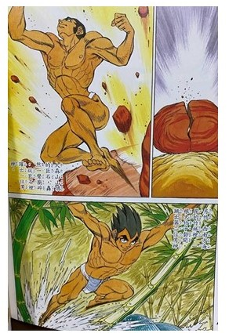

達悟起源
很久以前，天神俯視雅美小島，發現這個小島實美麗且富饒，又有種類繁多的洄游魚群，天神認為這小島沒人居住實在太可惜。有一回祂把子孫叫來，要求兩個子孫說：「你們二位是否願意下凡人間？你們看！那座小島如此的美麗，你們兩位是否願意到那座小島上居住？」二位孫子回答說：「我願意聽您老人家的指示。」
天神拿了一塊石頭，剝成兩半，然後把男孩放進去，石塊復合後，再拿一節竹子，把女孩安放在裡面。把石塊以及竹筒同時從天界放下來，由於石塊比較重，垂直落到大森林山山頂，天神落到地面時，立即裂成兩半，而後男孩從裡頭出來。
另外，竹筒由於比較輕，被風吹到大森林山底下，落地時，從裡頭跑出一個女孩。過一段時日後，男孩覺得很寂寞，而走下山去。途中遇到誕生於竹筒的女孩，二人興奮地談地天來，敘述各自出生的地點，當天色逐漸灰暗時，才各自回到自己住處，自此二人就經常在一起談天，最後，男孩決定遷徒山下與女孩毗鄰而居。
有一天，正當在房子裡談得很愉快時，突然感覺雙膝癢癢的，才發現左右雙膝逐漸腫大，他們十分驚訝，那時他們尚有尾巴；日子一天天過去，膝蓋腫脹日漸增大，期滿十個月後，二人雙膝各自出生一男一女。
他們除了高興之外，並未負起養育的責任，因為生下來的孩子馬上就可以起身走路。長大後兄妹兩人結為夫妻，不過生下來的孩子不是眼瞎、就是跛腳。降生於硬石的父親即說道：「竹女，兄妹所生結婚的後代皆為畸型，我想了一個辦法，就是互換妻子，不知你的意見如何？」竹生女回答說：「這或許是個好辦法。」交換妻子之後，過了一段時間，所生的孩子就和正常人一樣，有眼、鼻、嘴、身體四肢。後來，石生人和竹生女逐漸老去，當了祖父、祖母，自此後，硬石祖父開始為雅美島上所有動植物命名，不過當時他們尚沒有自己的名子，一律叫做Tawo也就是人的意思。